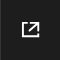

Sample projects¶
These projects demonstrate how to use Topwrap on a practical level, with examples based on a variety of useful designs.
Embedded GUI¶
This section extensively uses an embedded version of Topwrap’s GUI to visualize the design of all the examples.
You can use it to explore designs, while adding new blocks, connections, nodes and hierarchies.
The features that require direct connection with Topwrap’s backend are not implemented in this demo version, including:
saving and loading data in
.yamlfilesbuilding designs
verifying designs
Tip
Don’t forget to use the “Enable fullscreen” button if the viewport is too small.
Constant¶
This example shows how to assign a constant value to a port in an IP core. You can see it in the GUI by using the interactive preview functionality.
It is also visible in the description file (project.yaml).
Tip
You can find the constant node blueprint in the nodes browser within the Metanode section.
Usage¶
Switch to the subdirectory with the example:
cd examples/constant
Generate the HDL source:
make generate
Inout¶
This example showcases the usage of an inout port and its representation in the GUI.
Tip
An inout port is marked in the GUI by a green circle without a directional arrow inside.
The design consists of 3 modules: input buffer ibuf, output buffer obuf, and bidirectional buffer iobuf.
Their operation can be described as:
the input buffer is a synchronous D-type flip flop with an asynchronous reset
the output buffer is a synchronous D-type flip flop with an asynchronous reset and an
output enable, which sets the output to a high impedance state (Hi-Z)the inout buffer instantiates 1 input and 1 output buffer. The input of the
ibufand output of theobufare connected with an inout wire (port).
Usage¶
Switch to the subdirectory with the example:
cd examples/inout
Install the required dependencies:
pip install -r requirements.txt
To generate the bitstream for Zynq, use:
make
To generate only the HDL sources use:
make generate
User repository
This example presents the structure of a user repository containing prepackaged IP cores with sources and custom interface definitions.
Elements of the repo directory can be easily reused in different designs by linking to them from the config file or in the CLI.
See also
For more information about user repositories see this chapter.
Tip
As other components of the design are automatically imported from the repository, it’s possible to load the entire example by specifying the design file:
topwrap gui -d project.yml
Usage¶
Navigate to the /examples/user_repository/ directory and run:
topwrap gui -d project.yml
Expected result
Topwrap will load two cores from the cores directory, using the interface from the interfaces directory.
In the Nodes browser under IPcore, two loaded cores: core1 and core2, should be visible.
Hierarchy¶
This example shows how to create a hierarchical design in Topwrap, including a hierarchy that contains IP cores as well as other nested hierarchies.
Check out project.yaml to learn how the above design translates to a design description file
See also
For more information, see the section on Hierarchies.
Tip
Hierarchies are represented in the GUI by nodes with a green header. To display inner designs, click the Edit subgraph option from the context menu.
To exit from the hierarchy subgraph, use the back arrow button on the top left.
To add a new hierarchy node, use the New Graph Node option in the node browser.
Usage¶
topwrap gui -d project.yaml
PWM¶
Tip
The IP core in the center of the design (axi_axil_adapter) showcases how IP cores with overridable parameters are represented in the GUI.
This is an example of an AXI-mapped PWM IP core that can be generated with LiteX, connected to the ZYNQ Processing System.
The core uses the AXILite interface, so a AXI -> AXILite converter is needed.
You can access its registers starting from address 0x4000000 (the base address of AXI_GP0 on ZYNQ).
The generated signal can be used in a FPGA or connected to a physical port on a board.
Note
To connect I/O signals to specific FPGA pins, you must use mappings in a constraints file. See zynq.xdc used in the setup and modify it accordingly.
Usage¶
Switch to the subdirectory with the example:
cd examples/pwm
Install the required dependencies:
pip install -r requirements.txt
Note
In order to generate a bitstream, install Vivado and add it to the PATH.
To generate bitstream for Zynq, use:
make
To generate HDL sources without running Vivado, use:
make generate
HDMI¶
This is an example of how to use Topwrap to build a complex and synthesizable design.
Usage¶
Switch to the subdirectory with the example:
cd examples/hdmi
Install the required dependencies:
pip install -r requirements.txt
Note
In order to generate a bitstream, install Vivado and add it to the PATH.
Generate bitstream for desired target
Snickerdoodle Black:
make snickerdoodle
Zynq Video Board:
make zvb
To generate HDL sources without running Vivado, use:
make generate
SoC¶
This example is SoC that has an RISC-V processor, memory, and a UART connected by Wishbone interconnect. Wishbone interconnect has source or can be generated by Topwrap, it enables to compare generated interconnect with existing source code. This example can be run in a simulator such as Verilator. To run this example, the RISC-V 64-bit toolchain and Verilator simulator need to be installed.
Usage¶
Switch to the subdirectory with the example:
cd examples/soc
Install the required dependencies:
sudo apt install git make g++ ninja-build gcc-riscv64-unknown-elf bsdextrautils
Note
To run the simulation, you need:
verilator
To create and load the bitstream, use:
Generate HDL sources:
make generate
Build and run the simulation:
make sim
The expected waveform generated by the simulation is shown in expected-waveform.svg.
Generated waveforms by simulation are present in build/inter-topwrap for interconnect generated by topwrap, and build/inter-source for interconnect from source.
Generate the bitstream:
make bitstream
Note
For generate, sim and bitstream targets there also targets with suffix -inter-topwrap and -inter-source,
they can be used to generate HDL sources, simulate or generate the bitstream using topwrap generated or from source interconnect.
AXI interconnect¶
This example has one subordinator and one manager connected to each other using AXI4 interconnect generated by Topwrap. It is mainly used for checking if AXI4 interconnect generated by Topwrap is working in simulation. Similar examples that focus more on interconnect representation in Topwrap can be found in ir_examples
Usage¶
Switch to the subdirectory with the example:
cd examples/axi_interconnect
To generate HDL sources, use:
make generate
To run simulation using Verilator and generate wave.vcd use:
make sim